地政学
フェズはリーフ山地と中アトラスの間にあり、モロッコ内陸と北部、海岸部を結ぶ古都です。政治首都ではありません今も、宗教、学問、工芸、観光の重みが国内文化の軸になっています。王権の記憶と地域均衡を映す都市です。

🇲🇦 モロッコ / 北アフリカ / World City Atlas
フェズは、迷路のようなメディナ、カラウィーインの学問と信仰、皮なめしと陶器の職人労働、水路、食市場、音楽祭、観光圧、修復と新市街の生活が重なるモロッコの古都です。
都市の骨格
フェズは保存された古都ではなく、宗教、商い、工芸、住まい、教育、観光が今も同じ路地で交差する都市です。新市街と郊外が広がっても、メディナは街の記憶と労働を強く引き受けています。
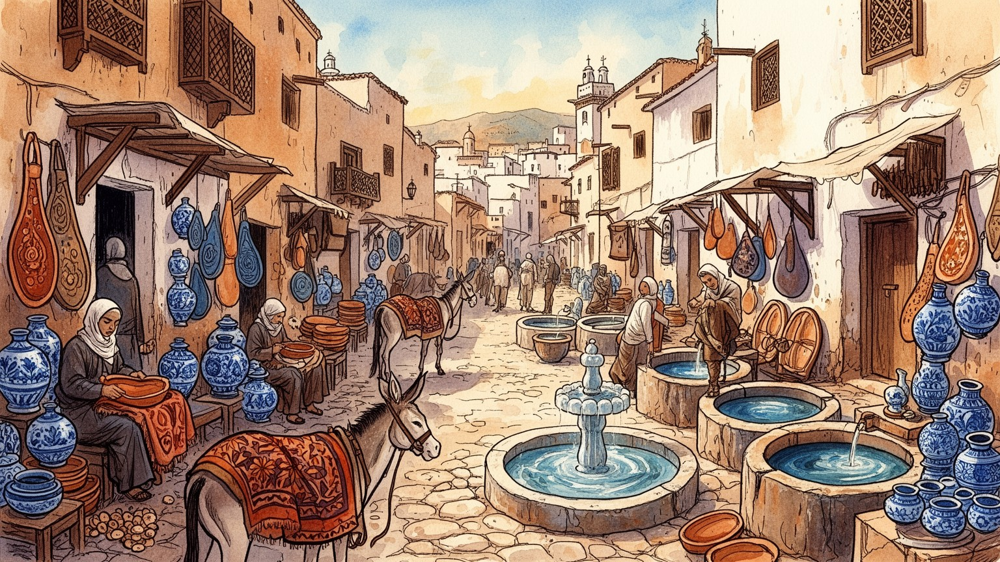
フェズはリーフ山地と中アトラスの間にあり、モロッコ内陸と北部、海岸部を結ぶ古都です。政治首都ではありません今も、宗教、学問、工芸、観光の重みが国内文化の軸になっています。王権の記憶と地域均衡を映す都市です。
観光、工芸、商業、食品加工、教育、宿泊が雇用を作ります。メディナの美しさは、皮なめし、陶器、金属、木工、染色、案内、清掃、修復の労働に支えられています。家族工房と現代雇用が近接します。課題も多い仕事です。
カラウィーイン、神学校、モスク、スーフィー音楽、家族の儀礼が都市の時間を作ります。信仰は観光名所の背景ではなく、路地、商い、学び、近隣関係の中で生きています。祈りと知が街路ににじみます。日常の軸です。
訪問者はメディナを迷宮として楽しみますが、住民には買い物、通学、荷運び、修理、近所づきあいの場です。観光圧、住宅改修、家賃、交通も日常の課題になります。遺産と生活が同じ路地を使います。今も続きます。
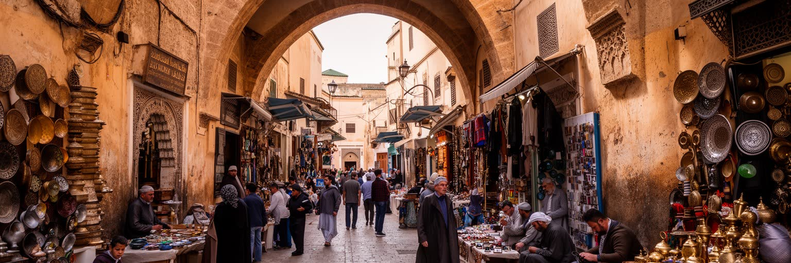
フェズのメディナは、世界遺産として知られるだけでなく、現在も住民、職人、商人、学生、観光客が同じ路地を使う巨大な都市組織です。細い道、門、スーク、住宅、モスク、工房、泉、学校が密に重なり、車が入りにくい構造は、都市の時間を徒歩と荷運びの速度に保っています。訪問者には迷路のように見える道も、住民にとっては買い物、通学、仕事、礼拝、親族訪問の生活路です。保存は石壁や木扉を残すことだけでは足りません。古い家の修理費、空き家化、観光宿への転用、家賃、排水、電気、消防、緊急車両の通行が、メディナの持続性を左右します。観光客が増えるほど土産物店や宿泊施設は増えますが、日用品の店や近隣の静けさが失われることもあります。フェズのメディナを読むには、迷う楽しさだけでなく、そこに住み、運び、直し、祈り、売る人の動きを見る必要があります。古都の魅力は、現役の生活が路地に残るからこそ深くなります。さらにメディナでは、観光客の動線と住民の動線が常に交差します。荷車やロバ、子どもの通学、店への配達、祈りへ向かう人の流れは、道の細さを単なる風情ではなく都市運営の条件にしています。どの路地を誰が掃除し、どの家が修復され、どの商店が残るのかが、フェズの未来を決めます。迷宮の価値は、住民が毎日使えることにあります。路地は生活の道です。
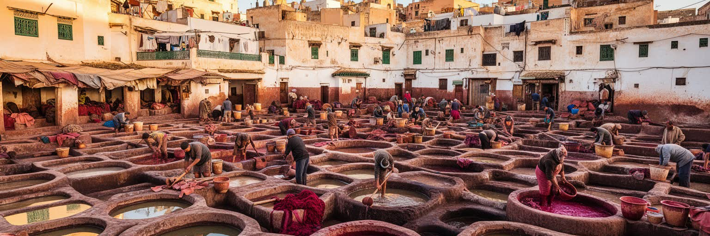
フェズの工芸を象徴するのが、皮なめし、陶器、金属細工、木工、刺繍、織物、製本などの手仕事です。とくに革の染色槽が並ぶ風景は有名ですが、それは観光写真である前に、におい、重労働、水、染料、流通、販売が絡む産業の現場です。職人は家族や徒弟の関係で技術を受け継ぎ、材料を仕入れ、仲買や店舗と交渉し、観光客の好みに合わせた商品も作ります。手仕事は伝統文化であると同時に、低賃金、健康リスク、後継者不足、模倣品との競争を抱えた労働でもあります。旅行者が値引きを楽しむ場面の背後には、材料費、作業時間、家族の生活があります。陶器や革製品が都市の名物として売れるほど、作り手が適正な収入を得ているかが重要になります。フェズの工芸を見るときは、完成品の美しさだけでなく、手を染め、火を使い、水を運び、店頭に立つ人の時間を見る必要があります。古都の経済は、目立たない労働の層で支えられています。工房の中では、年長者の判断、若い働き手の習熟、観光店の注文、輸出向け商品の仕様が同時に動きます。技法が守られているように見えても、実際には素材の価格、買い手の好み、健康への配慮、後継者の進路で毎年変化しています。伝統は固定された形ではなく、生活を支えるために調整される仕事です。作り手の尊厳と収入が守られてこそ、工芸は続きます。
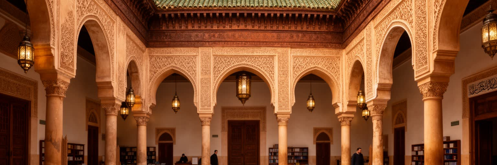
フェズを語るうえで欠かせないのが、カラウィーインを中心とする学問と信仰の伝統です。モスク、大学、神学校、図書館、中庭、説教、写本の記憶は、フェズを単なる商業都市ではなく、イスラム世界の知的な中心のひとつとして位置づけてきました。観光客は建築や装飾に目を奪われますが、そこには祈り、学び、規律、清掃、修復、近隣の生活が重なっています。宗教空間は観光資源になる一方、信仰の場としての静けさや尊重も必要です。学問の伝統は過去の栄光だけではなく、現代の教育、アラビア語、宗教知識、家族の期待、若者の進路にも関わります。フェズの宗教文化を読むには、装飾の美しさだけでなく、誰が学び、誰が祈り、誰が建物を守り、誰が外から訪れる人との距離を調整しているのかを見る必要があります。信仰は都市の背景ではなく、時間割、商い、食事、近所づきあいを形づくる力です。フェズの重みは、この日常の信仰と学びが路地の奥に残ることから生まれます。宗教教育の場は、観光客が入れる区域と入れない区域を分けながら、都市の内側に静かな中心を作ります。書物、暗唱、清掃、礼拝、修復、近隣の寄進は、建物の価値を日々更新します。外から見る華やかな装飾と、内側で続く規律を分けて考えることが、フェズ理解には欠かせません。知と祈りは、街の静かな秩序を支えています。
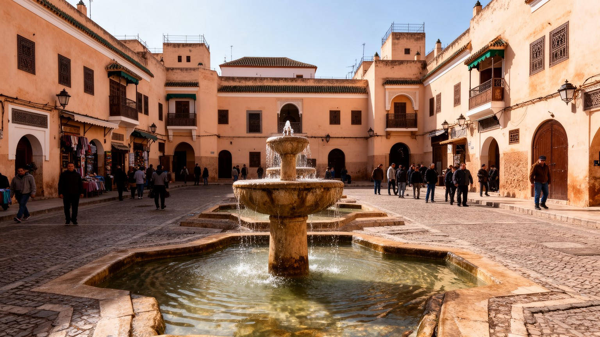
フェズのメディナには、泉、水路、中庭、浴場、洗い場、工房の水利用が重なってきました。古い都市では水は単なるインフラではなく、信仰、清潔、商い、工芸、近隣関係を支える基礎です。皮なめしや染色、食市場、家庭、ハマム、モスクの清めは、いずれも水に依存します。観光客は装飾された泉を美しい建築として見ることが多いですが、住民にとって水は毎日の衛生、料理、仕事、休息の条件です。都市が大きくなり、観光宿や飲食店が増えるほど、古い水路と現代の上下水道、排水、清掃、湿気対策の調整が重要になります。水が不足したり汚れたりすれば、工房、住宅、食堂、学校にすぐ影響します。フェズの水を読むには、泉の模様だけでなく、誰が水を使い、誰が修理し、どこへ排水し、どの季節に負担が増えるのかを見る必要があります。古都の景観は乾いた石の町に見えても、その内部では水が生活をつないでいます。水路は、見えにくい都市の記憶でもあります。水の流れは住宅の中庭、工房の作業、ハマムの熱、食堂の仕込み、礼拝前の清めをつなぎます。観光の表面には出にくい排水や湿気、老朽管の修理は、住民にとっては景観以上に切実です。水が安定して使えることは、そこで暮らし続けるための条件です。見えない水の管理が、古都の表情を保っています。修理の技術も欠かせません。
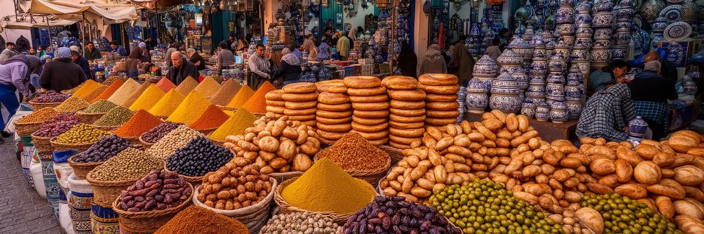
フェズの市場は、香辛料、パン、オリーブ、肉、野菜、菓子、ミント、陶器、日用品が混ざる生活の場所です。旅行者には色彩や香りが印象に残りますが、住民にとって市場は家計、季節、家族の食事、近所の信用を確認する場です。モロッコ料理の豊かさは、タジンやクスクスの名物だけでなく、朝のパン、昼の買い物、ラマダン前の準備、結婚式や祝日の食材に表れます。市場の店主、荷運び、パン焼き、肉屋、香辛料商、食堂、清掃の仕事が、メディナの生活を動かします。観光客向けの店が増えると、価格や品ぞろえが変わり、地元の買い物との距離が生まれることもあります。食市場を読むには、味を楽しむだけでなく、誰が早朝から仕込み、誰が材料を運び、誰が値段を決め、どの家族がどの店を信頼しているのかを見る必要があります。食は文化であると同時に、都市の社会関係です。フェズの市場には、観光の顔と日常の台所が同じ屋根の下にあります。小さな店の価格交渉、家族が決めたなじみの店、祝日前の混雑、ラマダンの夜に向けた買い出しは、都市の季節感を作ります。観光客が写真を撮る同じ棚から、住民は夕食や客を迎える材料を選びます。市場は、信頼と近隣の情報が行き交う場所です。食材の値段は、家計と季節の変化を住民に知らせます。市場は街の体温であり、毎日の台所でもあります。
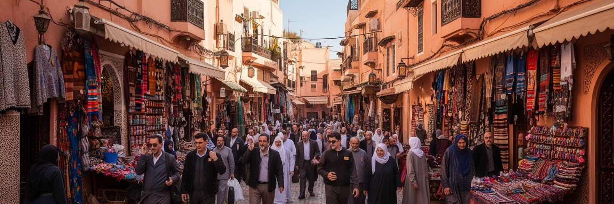
フェズは世界的な観光地であり、メディナ、皮なめし、神学校、門、リヤド、食文化を求めて多くの旅行者が訪れます。観光は職人、宿、ガイド、飲食、交通、修復に収入をもたらしますが、同時に住民の生活空間を変えます。古い住宅が宿泊施設に改修され、土産物店が増え、家賃や不動産価値が上がれば、住み続けにくくなる家族も出ます。観光客の流れは路地の混雑、騒音、写真撮影、値引き交渉、案内をめぐる摩擦を生みます。一方で、観光が減れば多くの人の仕事が失われるため、観光を単純に悪いものとして扱うこともできません。大切なのは、収入、住まい、文化の尊重、公共空間の使い方を同じ地図で見ることです。フェズの観光圧を読むには、美しいリヤドや迷宮散歩の背後で、誰が掃除し、誰が案内し、誰が移転し、誰が利益を得るのかを見る必要があります。古都の魅力が長く続くには、住民の暮らしが細らないことが条件です。観光の成功は、職人の収入、建物の修復、若者の雇用に結びつく一方で、住民が日常の買い物や通学をしにくくすることもあります。ガイド、宿主、清掃員、荷運び、飲食店の働き手がいるからこそ、訪問者は快適に迷宮を歩けます。利益と負担を誰が引き受けるのかを見ることが重要です。観光の成功は、住民が残れる形でなければ長続きしません。路地の暮らしも守る必要があります。
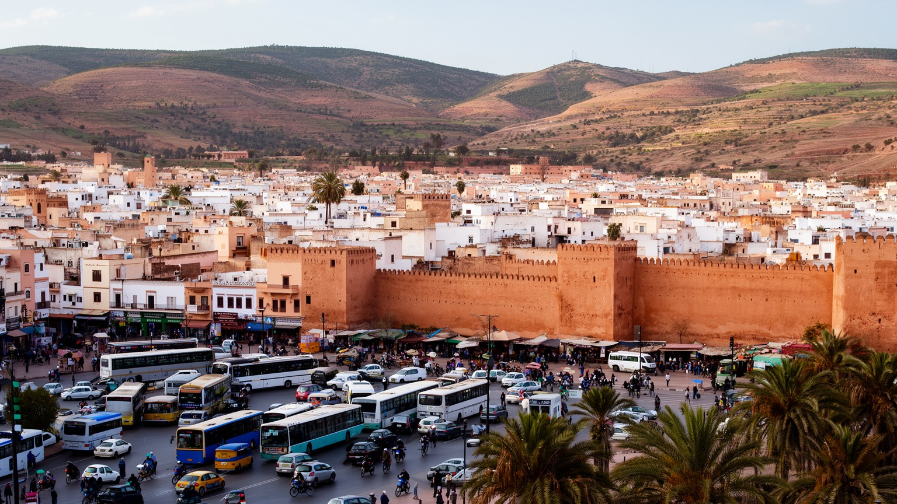
フェズはメディナだけで成り立つ都市ではありません。フランス植民地期以降の新市街、広い道路、駅、大学、集合住宅、行政施設、郊外の住宅地が、現代の生活圏を作っています。多くの住民は、古い路地だけでなく、バス、タクシー、車、学校、病院、ショッピング、役所を使いながら暮らします。観光客はメディナを中心に移動しがちですが、フェズの現在を理解するには、新市街の雇用、家賃、交通、若者の生活、郊外化を見る必要があります。旧市街の保存が進む一方で、住まいの広さや現代設備を求めて外へ移る家族もいます。新しい住宅地は便利さを生む一方、通勤時間、公共交通、歩道、緑地、学校、仕事へのアクセスを課題にします。フェズの都市構造は、古い中心と新しい生活圏の往復で成り立っています。メディナが文化の核であるなら、新市街と郊外は日々の仕事と家族の現実を引き受けています。古都の印象だけで街を語ると、現代のフェズで暮らす人の姿が見えにくくなります。新市街では学生が大学へ通い、家族が車やバスで移動し、職場と住宅の距離が毎日の負担になります。メディナに近い仕事をしていても、住まいは外側にある人も少なくありません。旧市街を守る議論と、現代的な住宅や道路を求める生活感覚は、同じ都市の中で並んでいます。古都と新市街は、競合ではなく往復する生活圏です。
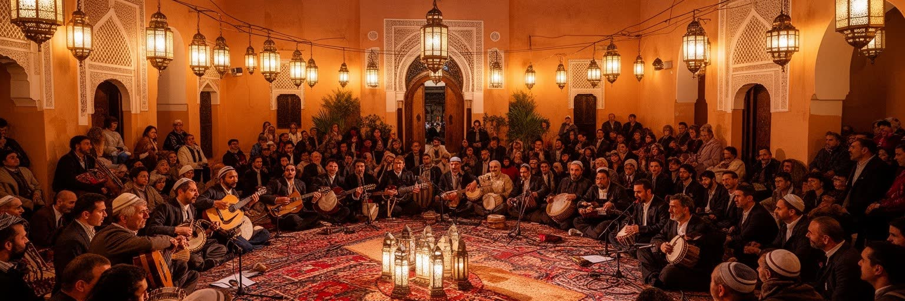
フェズは宗教都市であるだけでなく、音楽と精神文化の都市でもあります。スーフィーの伝統、アンダルシア音楽、宗教詩、祭礼、国際的な音楽イベントは、フェズを静かな学問都市とは別の形で世界に開きます。夜の中庭や広場で響く音楽は、観光の演出にもなりますが、地域の信仰、記憶、家族の儀礼とも深く結びついています。音楽祭はホテル、飲食、交通、舞台設営、警備、翻訳、案内に仕事を生み、都市を国際的に見せる機会になります。一方で、精神文化が観光商品として消費されると、儀礼の意味や地域の距離感が薄れる危険もあります。フェズの音楽を読むには、舞台の美しさだけでなく、誰が演奏し、誰が準備し、どの場が祈りで、どの場が観光で、収入がどこへ戻るのかを見る必要があります。音楽は都市の柔らかい入口ですが、その背後には信仰、教育、階層、言語、労働があります。フェズの精神文化は、古い建築と同じくらい重要な都市の遺産です。音楽や詩は、宗教的な場だけでなく、家庭の祝い、職人の集まり、観光イベント、国際交流の場にも現れます。音の響きはメディナの石壁や中庭と結びつき、都市の記憶を身体で感じさせます。演者の生活、練習場所、若い世代の継承がなければ、精神文化は舞台上の演出だけになってしまいます。音は都市の記憶を次の世代へ運びます。聞く場の継承も大切です。
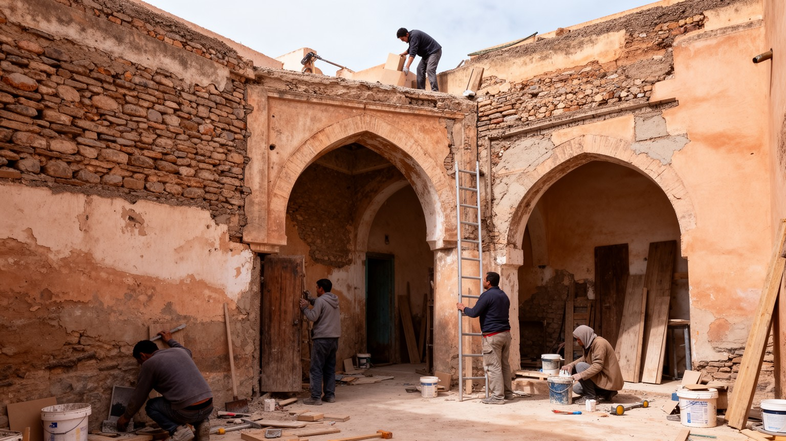
フェズの保存は、博物館のように街を止める作業ではありません。古い住宅、門、神学校、泉、工房、路地を、住民が使い続けられる形で直すことが求められます。修復には左官、木工、タイル、石材、排水、電気、防災、構造補強の技術が必要で、伝統技法と現代の安全基準をつなぐ仕事になります。観光客は修復された美しい空間を見ますが、その背後には資金調達、所有権、住民の合意、工期中の生活、職人の育成があります。建物が崩れれば文化遺産だけでなく住まいも失われ、過度に高級化すれば住民が外へ押し出されます。保存の成功は、写真映えする外観だけでは判断できません。誰が住み続け、誰が修理費を負担し、誰が技術を継承し、誰が観光収入を得るのかが重要です。フェズの修復を読むには、古い都市を過去として扱うのではなく、現代の生活基盤として見る必要があります。直しながら使うことが、フェズの文化を生きたものにしています。修復の現場では、観光向けに見える部分だけでなく、梁、排水、床、壁の湿気、電気配線のような見えない部分が重要です。職人が古い技法を知っていても、費用を払う仕組みや若い担い手がなければ維持は続きません。保存は一度の工事ではなく、住民と職人が長く関わる都市の習慣です。修復の質は、暮らしの安全と文化の継承を同時に左右します。
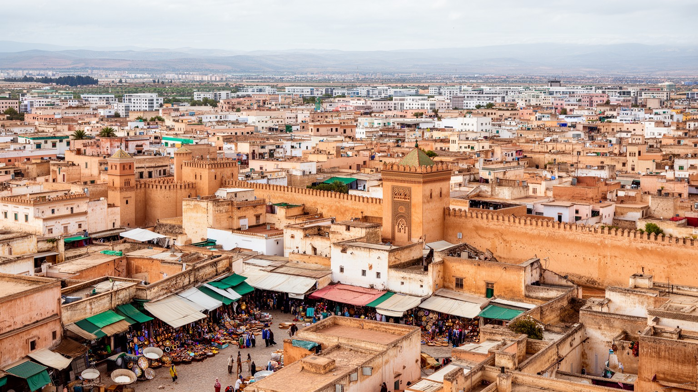
フェズは、訪問者にとって非常に強い印象を残す都市です。メディナの迷路、革なめし、青い陶器、神学校、門、泉、リヤド、音楽は、短い滞在でも古都らしさを分かりやすく伝えます。しかし、その魅力は単なる歴史景観ではありません。住民の通学、買い物、祈り、荷運び、職人の手仕事、家の修理、新市街への通勤、観光客との交渉が、同じ都市を毎日動かしています。フェズを読む鍵は、迷宮を外から眺めるだけでなく、その中で暮らす人の時間を想像することです。観光は収入を生みますが、住宅、家賃、路地の混雑、商いの変化、文化の消費ももたらします。古い建物の保存は大切ですが、住民が住み続けられなければ、都市は美しい殻になってしまいます。フェズは、信仰、学問、工芸、食、市場、音楽、修復、新市街の生活が重なった都市です。古都の価値は、過去が残ることだけでなく、過去を使いながら現代の生活を続ける力にあります。フェズの魅力を支えるのは、路地の写真だけではありません。店を開ける人、革を染める人、学生を教える人、古い家を直す人、観光客を案内する人、郊外から通う人が同じ都市を作っています。迷宮を美しいものとして見るほど、その迷宮を毎日使い続ける生活の重さも見なければなりません。フェズは過去の都市ではなく、今も働く都市です。そこに古都の力があります。